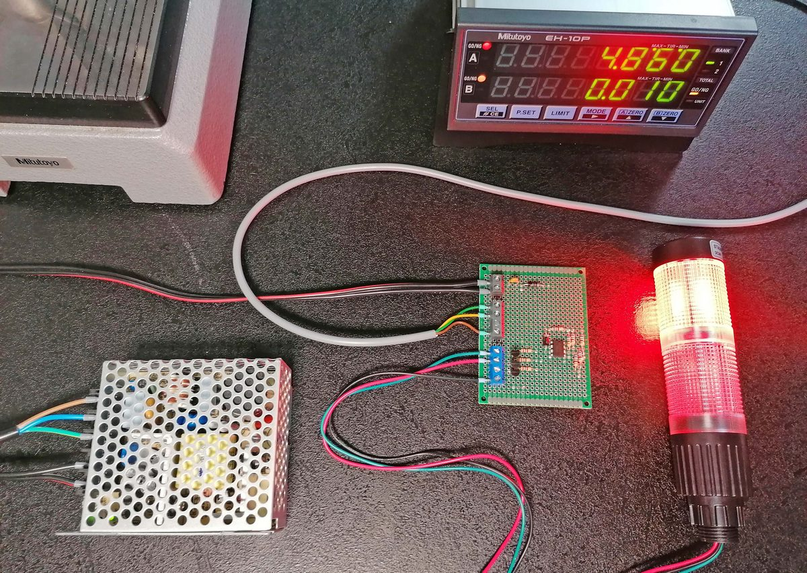
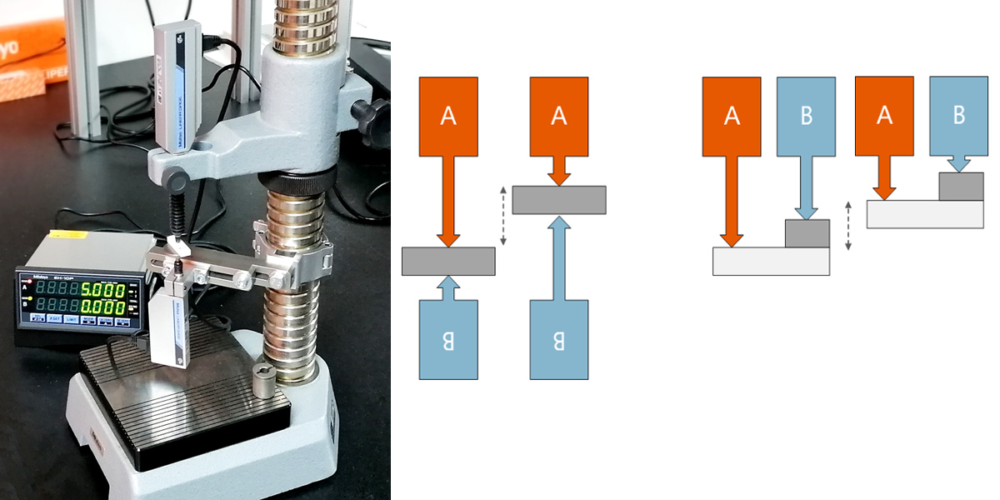
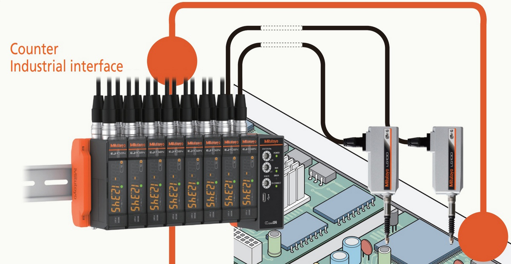

Aplikace s lineárními snímači a EG (EH) countery
Lineární snímače a jejich příslušenství představují důležitou skupinu produktů firmy Mitutoyo. Pro přiblížení těchto prvků uživatelům chceme ukázat několik realizovaných aplikací a příkladů použití. Jedná se o řešení s použitím jak inkrementálních (označení LGF, LGH, …) tak i absolutních snímačů (označení LGS, LGD) s klasickými čítači (countery) řady EG a EH. Čítač není "jen" zobrazovací jednotka pro zobrazení hodnot vzdálenosti změření lineárními snímači. Kromě zobrazení a napájení zajišťují čítače zpracování a online vyhodnocení hodnot (toleranční vyhodnocení, výpočty na hodnotách), umožňují nastavení parametrů celé sestavy a dále zajišťují komunikaci s nadřazenými systémy.
Jeden z příkladů nasazení tří propojených jednotek s EH countery a inkrementálními snímači je popsán v samostatném článku TIR measurement using linear gauges and EH counter.
PDF prospektv - Linear Gage and Display Unit Selection Guide.
Na tomto obrázku je vidět prototypovou sestavu připravenou k montáži do přípravku pro hromadnou kontrolu specifického rozměru dílu. Díl se na připravené patky bude vkládat svrchu a kontrolovaný bod dílu bude stlačovat vřeteno snímače dolů.
V měřící sestavě je použit absolute snímač (pamatuje si údaj i po vypnutí napájení, rozlišení 0,01 mm), EG čítač, napájecí zdroj 24 V určený pro vestavbu, světelný signalizační sloupek (dobrý/špatný) a jednoduchá elektronika posilující výstupy EG čítače pro použití se světelným sloupkem.
Funkci sestavy v modelovém zapojení zobrazuje následující video
Čítač má nastaven aktivní režim vyhodnocení tolerance, v tomto případě se třemi pásmy (špatný malý, dobrý, špatný velký). Hranice horní a dolní tolerance jsou manuálně nastaveny v čítači. Obě pásma mimo toleranci jsou spojena, takže ve výsledu je signalizován jen stav dobrý/špatný.
Logické výstupy čítače, které nyní řídí světelný sloupek, umožňují zatížení max. 20 mA, což je pro připojení sloupku nebo jiného zařízení s větším odběrem příliš málo. Proto je k posílení výstupů použita deska s jednoduchou elektronikou.
Jak je patrné z videa, na světelném sloupu je signalizován stav "špatný" i v klidové poloze, tedy i v případě, že není vložen žádný díl. To v některých případech nemusí být žádoucí. Tuto situaci lze ošetřit tak, že se použije pětistupňový systém tolerančního vyhodnocení
Pro stejného zákazníka jsme v minulosti navrhovali i o něco složitější sestavu se dvěma snímači (dva měřící body na dílu). S výhodou lze pro to použít EH čítač, který existuje i ve dvoukanálovém provedení. Toleranční vyhodnocení je zde nezávislé pro každý kanál. Deska elektroniky zde byla trochu složitější, protože se zde musela řešit logika pro světelný sloupek „pokud je alespoň jeden kanál NOT OK, je NOT OK celý výrobek“ (červené světlo).
Dvoukanálový čítač z obecně umožňuje provádět aritmetické operace s údaji zdvihu z obou kanálů. Typickým příkladem je diferenciální nebo součtové uspořádání. Na obrázku nahoře je fotografie testovací sestavy dvou snímačů v protiběžném diferenciálním uspořádání, vedle jsou pak schémata diferenciálního uspořádání s protiběžnými a souběžnými snímači. Toto uspořádání se používá při měření tzv. "plovoucího rozměru" (šedý blok), který není vztažený k žádnému pevnému bodu (základně) a může se v prostoru rozsahu snímačů měnit. Přesto je výsledný naměřený rozměr vždy stejný, protože čítač od polohy snímače A odečítá polohu B.
Nová řada EJ counterů
V současné době je vedle zde popisovaných klasických čítačů určených k zabudování do panelu k dispozici nový systém modulárních EJ čítačů určených k montáži na DIN lištu. Tyto snímač jsou určeny pouze pro inkrementální snímače, obzvláště pro novou řad LG100 a LG200, které jsou vylepšenou variantou předchozích inkrementálních snímačů a jsou vybaveny jinými menšími konektory pro nové EJ čítače. Pomocí konektorových redukcí jsou ale "nové" a "staré" snímače a čítače vzájemně zaměnitelné.
Výhody nové řady čítačů jsou nesporné:
- Rozměrová úspornost
- Modularita
- Montáž na DIN lištu
- Volitelné komunikační jednotky (USB, CC-link, Profinet)
Novým EJ counterům a jejich příslušenství bude věnován samostatný článek.
PDF prospekt - LINEAR GAGE LG100 Series, Compact-type Counter EJ Counter
Hlavní výhodou původních čítačů je pak snadnost použití v případech, kdy potřebujeme panelovou montáž – tedy velký a výrazný displej a jednoduchost ručního nastavování parametrů jednotky.